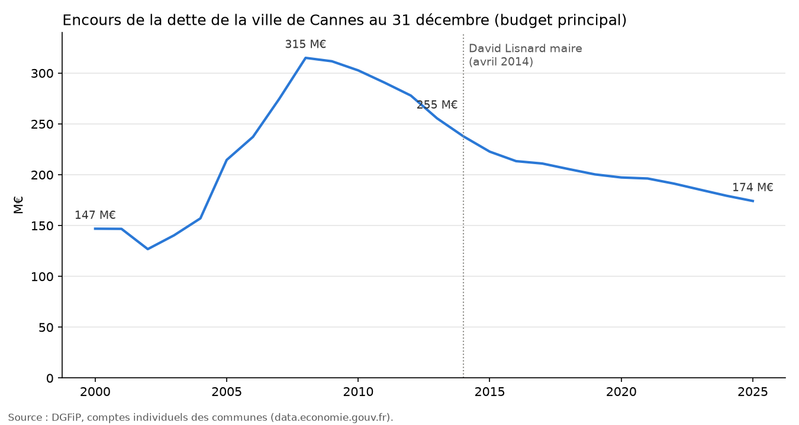

← Tous les thèmes · 16 sur 16
Cannes : bilan municipal
Le bilan financier qu'il revendique est confirmé par les comptes publics, avec deux nuances sur les années de comparaison.
- ✓Exact 3
- ≈Proche 2
- ?Invérifiable 1
6 affirmations · 13 sources
1Ce qu'il dit
Ses mots, avant toute vérification. Les étiquettes numérotées renvoient à l'affirmation vérifiée plus bas, sous le même numéro.
Ce qu'il revendique
La « rigueur bénéfique »
Depuis 2014, la mairie aurait baissé la dette chaque année, pour un total de « -71,5 M€ » fin 2024 et « -77,5 M€ » fin 2025, sans jamais augmenter les taux d'impôts communaux, et même en les baissant de « 3,6 % » en 2025.
Des marges retrouvées
« une multiplication par dix de la capacité d'autofinancement (55,92 M€ en 2024 contre 5,48 M€ en 2014) ».
Des dépenses en baisse
« -65,9 millions € » de dépenses de fonctionnement « depuis 2014 », grâce à :
- la productivité ;
- la baisse de l'absentéisme (« entre 6,8 et 7,1 % ») ;
- les « cercles de qualité » et la robotique.
Malgré un contexte difficile
- « une ville contrastée, au taux de pauvreté (21 %) supérieur à la moyenne nationale (14 %) » ;
- des charges de centralité ;
- les « ponctions de l'État », « 139 millions d'euros depuis 2014 » ;
- les inondations, la menace terroriste, le Covid.
Des politiques locales qu'il met en avant
- 100 % d'éducation artistique et culturelle dès 2017 ;
- vidéoprotection dense (« une caméra pour 158 habitants », 2015) ;
- sanctuarisation de la basse vallée de la Siagne pour l'agriculture.
Ce qu'il en tire pour le pays
Cannes sert de démonstration : selon lui, on peut baisser la dépense, la dette et les impôts tout en investissant. C'est la base de son plan national de 200 à 300 milliards d'euros d'économies (thème 1).
2Ce que disent les chiffres
Une carte par affirmation : l'étiquette dit en quoi la phrase s'écarte des chiffres, la ligne en dessous dit pourquoi. Ouvrir une carte pour lire la citation exacte, l'explication, le calcul et les sources.
1✓Exact« Un total de baisse de la dette communale de -77,5 M€ depuis 2014 » (21/02/2025, prévision pour fin 2025)La dette a baissé de 81,3 M€ entre fin 2013 et fin 2025, plus que ce qu'il annonçait. Elle avait toutefois plus que doublé de 2001 à 2008, quand il était premier adjoint.
« nous tablons sur a minima encore -1 M€ en 2025, pour un total de baisse de la dette communale de -77,5 M€ depuis 2014 »
David Lisnard, articles : La Mairie de Cannes baisse les impôts, 21 février 2025 · voir la source
✓Exact
Confirmé par les données publiques.
Exact Confiance : forte
- Ce qu'il annonce
- Données publiques
Pourquoi
- L'encours de dette du budget principal est passé de 255,5 M€ fin 2013 à 179,4 M€ fin 2024 (−76,1 M€), puis à 174,2 M€ fin 2025 (−81,3 M€).
- Il prévoyait −1 M€ en 2025 : la baisse a été de 5,2 M€. Ses chiffres intermédiaires sont aussi cohérents (−71,5 M€ annoncés pour fin 2024).
- La dette baisse chaque année depuis 2009. En 2025, elle représente 2,9 années de capacité d'autofinancement brute, loin du seuil d'alerte usuel de 12 ans.
- Contexte : la dette avait plus que doublé entre 2001 et 2008 (de 147 à 315 M€), sous la mandature précédente, où Lisnard était premier adjoint. Le désendettement depuis 2009 corrige en partie ce pic. Il affirmait en 2011 avoir obtenu le plan de désendettement en 2008.

Ses autres formulations (2)
- « En 10 ans, la Mairie de Cannes a baissé la dette chaque année, pour un total de -71,5M€ » (24/10/2024)
- « un désendettement record (-77,5 M€ depuis 2014) » (21/08/2025)
Le calcul
Dette
- Calculs :
- encours fin d'année N − encours fin 2013, dernier exercice avant l'élection d'avril 2014, pour N = 2023, 2024 et 2025 ;
- contexte : variation 2001-2008 ;
- capacité de désendettement 2025 = encours / CAF brute.
Résultats du calcul
Ce qu'il dit : -65,5 M€ prévu fin 2023 · -71,5 M€ · -77,5 M€ (dont -1 M€ prévu en 2025) · « très en-deçà du seuil d'alerte »
| Mesure | Cas | Valeur | Remarque |
|---|---|---|---|
| Baisse de l'encours de dette du budget principal | fin 2013 → fin 2023 | −70,16 M€ | encours : 255.5 M€ fin 2013, 185.3 M€ fin 2023 |
| Baisse de l'encours de dette du budget principal | fin 2013 → fin 2024 | −76,1 M€ | encours : 255.5 M€ fin 2013, 179.4 M€ fin 2024 |
| Baisse de l'encours de dette du budget principal | fin 2013 → fin 2025 | −81,25 M€ | encours : 255.5 M€ fin 2013, 174.2 M€ fin 2025 |
| Hausse de l'encours de dette (mandats précédents) | fin 2001 → fin 2008 | 168,21 M€ | de 146.8 à 315.0 M€ (sommet) |
| Capacité de désendettement (encours / CAF brute) | fin 2025 | 2,93 années | seuil d'alerte usuel : 12 ans |
Les sources (12)
- ADirection générale des finances publiques (data.economie.gouv.fr) · Comptes individuels des communes, fichier global 2008 : ligne de Cannes (budget principal, en milliers d'euros) · relevé le 14/11/2026 ·
DGFIP-COMPTES-CANNES-2008 - ADirection générale des finances publiques (data.economie.gouv.fr) · Comptes individuels des communes, fichier global 20090 : ligne de Cannes (budget principal, en milliers d'euros) · relevé le 14/11/2026 ·
DGFIP-COMPTES-CANNES-20090 - ADirection générale des finances publiques (data.economie.gouv.fr) · Comptes individuels des communes, fichier global 2010 : ligne de Cannes (budget principal, en milliers d'euros) · relevé le 14/11/2026 ·
DGFIP-COMPTES-CANNES-2010 - ADirection générale des finances publiques (data.economie.gouv.fr) · Comptes individuels des communes, fichier global 2011-2015 : ligne de Cannes (budget principal, en milliers d'euros) · relevé le 14/11/2026 ·
DGFIP-COMPTES-CANNES-2011-2015 - ADirection générale des finances publiques (data.economie.gouv.fr) · Comptes individuels des communes, fichier global 2016 : ligne de Cannes (budget principal, en milliers d'euros) · relevé le 14/11/2026 ·
DGFIP-COMPTES-CANNES-2016 - ADirection générale des finances publiques (data.economie.gouv.fr) · Comptes individuels des communes, fichier global 2017 : ligne de Cannes (budget principal, en milliers d'euros) · relevé le 14/11/2026 ·
DGFIP-COMPTES-CANNES-2017 - ADirection générale des finances publiques (data.economie.gouv.fr) · Comptes individuels des communes, fichier global 2018 : ligne de Cannes (budget principal, en milliers d'euros) · relevé le 14/11/2026 ·
DGFIP-COMPTES-CANNES-2018 - ADirection générale des finances publiques (data.economie.gouv.fr) · Comptes individuels des communes, fichier global 2019-2020 : ligne de Cannes (budget principal, en milliers d'euros) · relevé le 14/11/2026 ·
DGFIP-COMPTES-CANNES-2019-2020 - ADirection générale des finances publiques (data.economie.gouv.fr) · Comptes individuels des communes, fichier global 2021 : ligne de Cannes (budget principal, en milliers d'euros) · relevé le 14/11/2026 ·
DGFIP-COMPTES-CANNES-2021 - ADirection générale des finances publiques (data.economie.gouv.fr) · Comptes individuels des communes, fichier global 2022 : ligne de Cannes (budget principal, en milliers d'euros) · relevé le 14/11/2026 ·
DGFIP-COMPTES-CANNES-2022 - ADirection générale des finances publiques (data.economie.gouv.fr) · Comptes individuels des communes, fichier global 2023-2024 : ligne de Cannes (budget principal, en milliers d'euros) · relevé le 14/11/2026 ·
DGFIP-COMPTES-CANNES-2023-2024 - ADirection générale des finances publiques (data.economie.gouv.fr) · Comptes individuels des communes, fichier global 2025 : ligne de Cannes (budget principal, en milliers d'euros) · relevé le 14/11/2026 ·
DGFIP-COMPTES-CANNES-2025
2≈Contexte manquant« Une multiplication par dix de la capacité d'autofinancement (55,92 M€ en 2024 contre 5,48 M€ en 2014) » (21/08/2025)Le calcul est juste, mais 2014 est le point le plus bas de la période. Sur des moyennes de trois ans, la progression est de 2,8 fois.
« une multiplication par dix de la capacité d’autofinancement (55,92 M€ en 2024 contre 5,48 M€ en 2014). »
David Lisnard, articles : Cannes parmi les villes les mieux gérées de France, 21 août 2025 · voir la source
≈Contexte manquant
Le chiffre est juste, mais il manque l'élément qui change la lecture : année de départ choisie, cas extrême, méthode non dite.
Proche Confiance : forte
- Ce qu'il annonce
- Données publiques
Pourquoi
- La CAF nette (épargne nette) du budget principal passe de 5,5 M€ en 2014 à 56,0 M€ en 2024, soit 10,1 fois plus.
- Mais 2014 est le point le plus bas de la période : 21,6 M€ en 2012, 14,1 M€ en 2013. En 2025, elle redescend à 41,3 M€.
- Sur des moyennes de trois ans (2011-2013 contre 2023-2025), la progression est de 2,8 fois. C'est une amélioration nette, mais pas une multiplication par dix.
Le calcul
Capacité d'autofinancement
- CAF nette = CAF brute − remboursement en capital de la dette. Son équivalent à l'OFGL s'appelle « épargne nette » (55,92 M€ en 2024 sur data.ofgl.fr, 56,01 M€ ici).
- Calculs :
- rapport 2024 / 2014 ;
- rapport des moyennes sur trois ans (2023-2025 contre 2011-2013), moins sensible au choix des années.
Résultats du calcul
Ce qu'il dit : 5,48 M€ en 2014, 55,92 M€ en 2024 · « multiplication par dix »
| Mesure | Cas | Valeur | Remarque |
|---|---|---|---|
| CAF nette (épargne nette) du budget principal | 2012 | 21,57 M€ | |
| CAF nette (épargne nette) du budget principal | 2013 | 14,09 M€ | |
| CAF nette (épargne nette) du budget principal | 2014 | 5,54 M€ | |
| CAF nette (épargne nette) du budget principal | 2024 | 56,01 M€ | |
| CAF nette (épargne nette) du budget principal | 2025 | 41,27 M€ | |
| Rapport des CAF nettes | 2024 / 2014 | 10,11 fois | |
| Rapport des CAF nettes moyennes sur trois ans | moyenne 2023-2025 / moyenne 2011-2013 | 2,77 fois | évite de dépendre d'une année creuse ou d'un pic |
Les sources (12)
- ADirection générale des finances publiques (data.economie.gouv.fr) · Comptes individuels des communes, fichier global 2008 : ligne de Cannes (budget principal, en milliers d'euros) · relevé le 14/11/2026 ·
DGFIP-COMPTES-CANNES-2008 - ADirection générale des finances publiques (data.economie.gouv.fr) · Comptes individuels des communes, fichier global 20090 : ligne de Cannes (budget principal, en milliers d'euros) · relevé le 14/11/2026 ·
DGFIP-COMPTES-CANNES-20090 - ADirection générale des finances publiques (data.economie.gouv.fr) · Comptes individuels des communes, fichier global 2010 : ligne de Cannes (budget principal, en milliers d'euros) · relevé le 14/11/2026 ·
DGFIP-COMPTES-CANNES-2010 - ADirection générale des finances publiques (data.economie.gouv.fr) · Comptes individuels des communes, fichier global 2011-2015 : ligne de Cannes (budget principal, en milliers d'euros) · relevé le 14/11/2026 ·
DGFIP-COMPTES-CANNES-2011-2015 - ADirection générale des finances publiques (data.economie.gouv.fr) · Comptes individuels des communes, fichier global 2016 : ligne de Cannes (budget principal, en milliers d'euros) · relevé le 14/11/2026 ·
DGFIP-COMPTES-CANNES-2016 - ADirection générale des finances publiques (data.economie.gouv.fr) · Comptes individuels des communes, fichier global 2017 : ligne de Cannes (budget principal, en milliers d'euros) · relevé le 14/11/2026 ·
DGFIP-COMPTES-CANNES-2017 - ADirection générale des finances publiques (data.economie.gouv.fr) · Comptes individuels des communes, fichier global 2018 : ligne de Cannes (budget principal, en milliers d'euros) · relevé le 14/11/2026 ·
DGFIP-COMPTES-CANNES-2018 - ADirection générale des finances publiques (data.economie.gouv.fr) · Comptes individuels des communes, fichier global 2019-2020 : ligne de Cannes (budget principal, en milliers d'euros) · relevé le 14/11/2026 ·
DGFIP-COMPTES-CANNES-2019-2020 - ADirection générale des finances publiques (data.economie.gouv.fr) · Comptes individuels des communes, fichier global 2021 : ligne de Cannes (budget principal, en milliers d'euros) · relevé le 14/11/2026 ·
DGFIP-COMPTES-CANNES-2021 - ADirection générale des finances publiques (data.economie.gouv.fr) · Comptes individuels des communes, fichier global 2022 : ligne de Cannes (budget principal, en milliers d'euros) · relevé le 14/11/2026 ·
DGFIP-COMPTES-CANNES-2022 - ADirection générale des finances publiques (data.economie.gouv.fr) · Comptes individuels des communes, fichier global 2023-2024 : ligne de Cannes (budget principal, en milliers d'euros) · relevé le 14/11/2026 ·
DGFIP-COMPTES-CANNES-2023-2024 - ADirection générale des finances publiques (data.economie.gouv.fr) · Comptes individuels des communes, fichier global 2025 : ligne de Cannes (budget principal, en milliers d'euros) · relevé le 14/11/2026 ·
DGFIP-COMPTES-CANNES-2025
3✓Exact« Une stabilité des taux communaux d'impôts locaux pendant 11 ans […] et même une baisse de -3,6 % en 2025 » (21/08/2025)Les taux communaux n'ont pas bougé de 2014 à 2024, hors transfert mécanique de la part départementale en 2021, puis ont baissé de 3,6 % en 2025.
« une stabilité des taux communaux d’impôts locaux pendant 11 ans, assortie d’abattements protecteurs et même d’une baisse de -3,6 % en 2025 »
David Lisnard, articles : Cannes parmi les villes les mieux gérées de France, 21 août 2025 · voir la source
✓Exact
Confirmé par les données publiques.
Exact Confiance : forte
Pourquoi
- De 2014 à 2024, les taux communaux de la taxe d'habitation (27,88 %) et du foncier non bâti (14,22 %) n'ont pas bougé.
- Le foncier bâti est passé de 17,50 % à 28,12 % en 2021, mais c'est le transfert mécanique de la part départementale (10,62 points) lié à la suppression de la taxe d'habitation, et non une hausse votée par la ville.
- En 2025, les trois taux baissent de 3,6 % : 28,12 → 27,12 %, 14,22 → 13,71 % et 27,88 → 26,89 %.
- Les taux sont stables, mais le produit de l'impôt peut augmenter avec la revalorisation légale des bases. Cela ne contredit pas ce qu'il dit.
Ses autres formulations (1)
- « Les impôts n'ont jamais été augmentés » (24/10/2024)
Le calcul
Taux d'imposition
- Calculs :
- nombre de taux différents de 2014 à 2024, par taxe ;
- évolution du taux de 2024 à 2025.
- Le passage du foncier bâti de 17,50 % à 28,12 % en 2021 est mécanique. Ce n'est pas une hausse : la part départementale (10,62 points) a été transférée aux communes avec la suppression de la taxe d'habitation sur les résidences principales.
Résultats du calcul
Ce qu'il dit : stabilité pendant 11 ans · -3,6 %
| Mesure | Cas | Valeur | Remarque |
|---|---|---|---|
| Nombre de valeurs différentes du taux communal de 2014 à 2024 | taxe foncière sur le bâti, 2014-2024 | 2,0 valeurs | 2 valeurs pour le foncier bâti : 17,50 % puis 28,12 % en 2021, transfert du taux départemental (réforme de la taxe d'habitation) |
| Évolution du taux communal | taxe foncière sur le bâti, 2025 / 2024 | −3,56 % | 28.12 % → 27.12 % |
| Nombre de valeurs différentes du taux communal de 2014 à 2024 | taxe foncière sur le non-bâti, 2014-2024 | 1,0 valeurs | |
| Évolution du taux communal | taxe foncière sur le non-bâti, 2025 / 2024 | −3,59 % | 14.22 % → 13.71 % |
| Nombre de valeurs différentes du taux communal de 2014 à 2024 | taxe d'habitation, 2014-2024 | 1,0 valeurs | |
| Évolution du taux communal | taxe d'habitation, 2025 / 2024 | −3,55 % | 27.88 % → 26.89 % |
Les sources (12)
- ADirection générale des finances publiques (data.economie.gouv.fr) · Comptes individuels des communes, fichier global 2008 : ligne de Cannes (budget principal, en milliers d'euros) · relevé le 14/11/2026 ·
DGFIP-COMPTES-CANNES-2008 - ADirection générale des finances publiques (data.economie.gouv.fr) · Comptes individuels des communes, fichier global 20090 : ligne de Cannes (budget principal, en milliers d'euros) · relevé le 14/11/2026 ·
DGFIP-COMPTES-CANNES-20090 - ADirection générale des finances publiques (data.economie.gouv.fr) · Comptes individuels des communes, fichier global 2010 : ligne de Cannes (budget principal, en milliers d'euros) · relevé le 14/11/2026 ·
DGFIP-COMPTES-CANNES-2010 - ADirection générale des finances publiques (data.economie.gouv.fr) · Comptes individuels des communes, fichier global 2011-2015 : ligne de Cannes (budget principal, en milliers d'euros) · relevé le 14/11/2026 ·
DGFIP-COMPTES-CANNES-2011-2015 - ADirection générale des finances publiques (data.economie.gouv.fr) · Comptes individuels des communes, fichier global 2016 : ligne de Cannes (budget principal, en milliers d'euros) · relevé le 14/11/2026 ·
DGFIP-COMPTES-CANNES-2016 - ADirection générale des finances publiques (data.economie.gouv.fr) · Comptes individuels des communes, fichier global 2017 : ligne de Cannes (budget principal, en milliers d'euros) · relevé le 14/11/2026 ·
DGFIP-COMPTES-CANNES-2017 - ADirection générale des finances publiques (data.economie.gouv.fr) · Comptes individuels des communes, fichier global 2018 : ligne de Cannes (budget principal, en milliers d'euros) · relevé le 14/11/2026 ·
DGFIP-COMPTES-CANNES-2018 - ADirection générale des finances publiques (data.economie.gouv.fr) · Comptes individuels des communes, fichier global 2019-2020 : ligne de Cannes (budget principal, en milliers d'euros) · relevé le 14/11/2026 ·
DGFIP-COMPTES-CANNES-2019-2020 - ADirection générale des finances publiques (data.economie.gouv.fr) · Comptes individuels des communes, fichier global 2021 : ligne de Cannes (budget principal, en milliers d'euros) · relevé le 14/11/2026 ·
DGFIP-COMPTES-CANNES-2021 - ADirection générale des finances publiques (data.economie.gouv.fr) · Comptes individuels des communes, fichier global 2022 : ligne de Cannes (budget principal, en milliers d'euros) · relevé le 14/11/2026 ·
DGFIP-COMPTES-CANNES-2022 - ADirection générale des finances publiques (data.economie.gouv.fr) · Comptes individuels des communes, fichier global 2023-2024 : ligne de Cannes (budget principal, en milliers d'euros) · relevé le 14/11/2026 ·
DGFIP-COMPTES-CANNES-2023-2024 - ADirection générale des finances publiques (data.economie.gouv.fr) · Comptes individuels des communes, fichier global 2025 : ligne de Cannes (budget principal, en milliers d'euros) · relevé le 14/11/2026 ·
DGFIP-COMPTES-CANNES-2025
4≈Contexte manquant« Diminuer les dépenses de fonctionnement (-65,9 millions € depuis 2014) » (31/10/2024)L'ordre de grandeur est le sien, mais 2014 est un point haut et les dépenses remontent depuis 2023.
« Ce qui a permis de diminuer les dépenses de fonctionnement (-65,9 millions€ depuis 2014) et de baisser la dette (-71,5 millions€ depuis 2014). »
David Lisnard, articles : À Cannes, l’absentéisme largement en-dessous de la moyenne nationale, 31 octobre 2024 · voir la source
≈Contexte manquant
Le chiffre est juste, mais il manque l'élément qui change la lecture : année de départ choisie, cas extrême, méthode non dite.
Proche Confiance : moyenne
- Ce qu'il annonce
- Données publiques
Pourquoi
- Les charges de fonctionnement du budget principal passent de 262,2 M€ en 2014 à 198,7 M€ en 2023 (−63,5 M€), et à 189,7 M€ en 2022 (−72,4 M€). L'ordre de grandeur est le sien.
- Mais 2014 est un point haut : 251,2 M€ en 2013. Depuis 2013, la baisse n'est que de 52,5 M€ (fin 2023). Les dépenses remontent depuis 2023 (211,5 M€ en 2024).
- Ces montants sont en euros courants. Corrigée de l'inflation, la baisse serait plus forte.
- Une partie de la baisse peut venir de transferts de compétences à l'intercommunalité. Ce point n'a pas été vérifié.
Le calcul
Dépenses de fonctionnement
- Calcul : différence des charges de fonctionnement entre deux exercices, en euros courants, pour plusieurs couples d'années.
Résultats du calcul
Ce qu'il dit : -65,9 M€ depuis 2014
| Mesure | Cas | Valeur | Remarque |
|---|---|---|---|
| Évolution des charges de fonctionnement du budget principal | 2014 → 2023 | −63,45 M€ | 262.2 → 198.7 M€ (euros courants) |
| Évolution des charges de fonctionnement du budget principal | 2014 → 2022 | −72,44 M€ | 262.2 → 189.7 M€ (euros courants) |
| Évolution des charges de fonctionnement du budget principal | 2013 → 2023 | −52,46 M€ | 251.2 → 198.7 M€ (euros courants) |
| Évolution des charges de fonctionnement du budget principal | 2014 → 2024 | −50,72 M€ | 262.2 → 211.5 M€ (euros courants) |
Les sources (12)
- ADirection générale des finances publiques (data.economie.gouv.fr) · Comptes individuels des communes, fichier global 2008 : ligne de Cannes (budget principal, en milliers d'euros) · relevé le 14/11/2026 ·
DGFIP-COMPTES-CANNES-2008 - ADirection générale des finances publiques (data.economie.gouv.fr) · Comptes individuels des communes, fichier global 20090 : ligne de Cannes (budget principal, en milliers d'euros) · relevé le 14/11/2026 ·
DGFIP-COMPTES-CANNES-20090 - ADirection générale des finances publiques (data.economie.gouv.fr) · Comptes individuels des communes, fichier global 2010 : ligne de Cannes (budget principal, en milliers d'euros) · relevé le 14/11/2026 ·
DGFIP-COMPTES-CANNES-2010 - ADirection générale des finances publiques (data.economie.gouv.fr) · Comptes individuels des communes, fichier global 2011-2015 : ligne de Cannes (budget principal, en milliers d'euros) · relevé le 14/11/2026 ·
DGFIP-COMPTES-CANNES-2011-2015 - ADirection générale des finances publiques (data.economie.gouv.fr) · Comptes individuels des communes, fichier global 2016 : ligne de Cannes (budget principal, en milliers d'euros) · relevé le 14/11/2026 ·
DGFIP-COMPTES-CANNES-2016 - ADirection générale des finances publiques (data.economie.gouv.fr) · Comptes individuels des communes, fichier global 2017 : ligne de Cannes (budget principal, en milliers d'euros) · relevé le 14/11/2026 ·
DGFIP-COMPTES-CANNES-2017 - ADirection générale des finances publiques (data.economie.gouv.fr) · Comptes individuels des communes, fichier global 2018 : ligne de Cannes (budget principal, en milliers d'euros) · relevé le 14/11/2026 ·
DGFIP-COMPTES-CANNES-2018 - ADirection générale des finances publiques (data.economie.gouv.fr) · Comptes individuels des communes, fichier global 2019-2020 : ligne de Cannes (budget principal, en milliers d'euros) · relevé le 14/11/2026 ·
DGFIP-COMPTES-CANNES-2019-2020 - ADirection générale des finances publiques (data.economie.gouv.fr) · Comptes individuels des communes, fichier global 2021 : ligne de Cannes (budget principal, en milliers d'euros) · relevé le 14/11/2026 ·
DGFIP-COMPTES-CANNES-2021 - ADirection générale des finances publiques (data.economie.gouv.fr) · Comptes individuels des communes, fichier global 2022 : ligne de Cannes (budget principal, en milliers d'euros) · relevé le 14/11/2026 ·
DGFIP-COMPTES-CANNES-2022 - ADirection générale des finances publiques (data.economie.gouv.fr) · Comptes individuels des communes, fichier global 2023-2024 : ligne de Cannes (budget principal, en milliers d'euros) · relevé le 14/11/2026 ·
DGFIP-COMPTES-CANNES-2023-2024 - ADirection générale des finances publiques (data.economie.gouv.fr) · Comptes individuels des communes, fichier global 2025 : ligne de Cannes (budget principal, en milliers d'euros) · relevé le 14/11/2026 ·
DGFIP-COMPTES-CANNES-2025
5✓Exact« Au taux de pauvreté (21 %) supérieur à la moyenne nationale (14 %) » (24/10/2024)Insee : 21,0 % à Cannes, contre 14,9 % en France métropolitaine.
« Dans une ville contrastée, au taux de pauvreté (21%) supérieur à la moyenne nationale (14%) »
David Lisnard, articles : David Lisnard réunit les équipes municipales pour trouver de nouvelles pistes d’économies, 24 octobre 2024 · voir la source
✓Exact
Confirmé par les données publiques.
Exact Confiance : forte
- Ce qu'il annonce
- Données publiques
Pourquoi
- Selon l'Insee (Filosofi 2021), le taux de pauvreté est de 21,0 % à Cannes, contre 14,9 % en France métropolitaine.
Le calcul
Pauvreté
- Entrée :
INSEE-FILOSOFI-2021(fichierscc_filosofi_2021_COM.csvetcc_filosofi_2021_METRO.csv) : taux de pauvreté à 60 % du niveau de vie médian (variable TP6021). Aucun calcul.
Résultats du calcul
Ce qu'il dit : 21 % · 14 %
| Mesure | Cas | Valeur | Remarque |
|---|---|---|---|
| Taux de pauvreté (seuil à 60 % du niveau de vie médian) | Cannes, 2021 | 21,0 % | |
| Taux de pauvreté (seuil à 60 % du niveau de vie médian) | France métropolitaine, 2021 | 14,9 % | même source et même méthode (Filosofi) |
Les sources (1)
- AInsee (Filosofi 2021, géographie 2024) · Revenus, pauvreté et niveau de vie en 2021 : bases communales et France métropolitaine · relevé le 14/11/2026 ·
INSEE-FILOSOFI-2021
6?Sans source« Les ponctions de l'État sur les finances de la Ville de Cannes qui s'élèvent à 139 millions d'euros depuis 2014 » (14/02/2023)Il ne précise pas ce qu'il compte. Pour la seule dotation globale de fonctionnement, on trouve environ 102 M€ de baisse cumulée.
« les ponctions de l’Etat sur les finances de la Ville de Cannes qui s’élèvent à 139 millions d’euros depuis 2014 ! »
David Lisnard, articles : Protection des contribuables, baisse de la dette, amélioration des espaces publics : David, 14 février 2023 · voir la source
?Sans source
Pas de source, source mal attribuée, ou source proche de ses thèses.
Invérifiable
Pourquoi
- Il ne précise pas ce qu'il compte dans ces « ponctions ».
- Pour la seule DGF, la baisse cumulée sur 2015-2022 par rapport à 2014 est d'environ 102 M€.
- Par rapport à 2013, on obtiendrait environ 253 M€.
- Mais la DGF chute de 36 % en 2014, probablement à cause d'un changement de périmètre l'année de création de la communauté d'agglomération. Ce point n'a pas été vérifié.
- Son chiffre de 139 M€ se situe entre ces deux calculs et peut inclure d'autres prélèvements (péréquation). Il n'est pas reproductible avec les données téléchargées.
Le calcul
« Ponctions de l'État » — ESTIMATION
- Calcul : somme, sur 2014-2022, des écarts entre la DGF de l'année de référence et la DGF de chaque année.
- Avec 2013 comme référence : la DGF passe de 47,2 M€ en 2013 à 30,4 M€ en 2014. Cette chute inhabituelle suggère un changement de périmètre, qui n'a pas été vérifié.
- Avec 2014 comme référence.
- Estimation, non fiable à 100 % : la DGF n'est qu'une partie des « ponctions » possibles. La péréquation (FPIC) et d'autres prélèvements ne sont pas comptés.
Résultats du calcul
Ce qu'il dit : 139 M€ depuis 2014
| Mesure | Cas | Valeur | Remarque |
|---|---|---|---|
| Baisse cumulée de la DGF par rapport à 2013 | DGF, base 2013, cumul 2014-2022 | 252,65 M€ | ESTIMATION, non fiable à 100 % : la chute de 2014 (−16,8 M€, −36 %) suggère un changement de périmètre l'année de création de la communauté d'agglomération (non vérifié) |
| Baisse cumulée de la DGF par rapport à 2014 | DGF, base 2014, cumul 2015-2022 | 101,6 M€ | ESTIMATION, non fiable à 100 % : DGF seule, sans les autres prélèvements (péréquation, FPIC) que Lisnard inclut peut-être |
Les sources (12)
- ADirection générale des finances publiques (data.economie.gouv.fr) · Comptes individuels des communes, fichier global 2008 : ligne de Cannes (budget principal, en milliers d'euros) · relevé le 14/11/2026 ·
DGFIP-COMPTES-CANNES-2008 - ADirection générale des finances publiques (data.economie.gouv.fr) · Comptes individuels des communes, fichier global 20090 : ligne de Cannes (budget principal, en milliers d'euros) · relevé le 14/11/2026 ·
DGFIP-COMPTES-CANNES-20090 - ADirection générale des finances publiques (data.economie.gouv.fr) · Comptes individuels des communes, fichier global 2010 : ligne de Cannes (budget principal, en milliers d'euros) · relevé le 14/11/2026 ·
DGFIP-COMPTES-CANNES-2010 - ADirection générale des finances publiques (data.economie.gouv.fr) · Comptes individuels des communes, fichier global 2011-2015 : ligne de Cannes (budget principal, en milliers d'euros) · relevé le 14/11/2026 ·
DGFIP-COMPTES-CANNES-2011-2015 - ADirection générale des finances publiques (data.economie.gouv.fr) · Comptes individuels des communes, fichier global 2016 : ligne de Cannes (budget principal, en milliers d'euros) · relevé le 14/11/2026 ·
DGFIP-COMPTES-CANNES-2016 - ADirection générale des finances publiques (data.economie.gouv.fr) · Comptes individuels des communes, fichier global 2017 : ligne de Cannes (budget principal, en milliers d'euros) · relevé le 14/11/2026 ·
DGFIP-COMPTES-CANNES-2017 - ADirection générale des finances publiques (data.economie.gouv.fr) · Comptes individuels des communes, fichier global 2018 : ligne de Cannes (budget principal, en milliers d'euros) · relevé le 14/11/2026 ·
DGFIP-COMPTES-CANNES-2018 - ADirection générale des finances publiques (data.economie.gouv.fr) · Comptes individuels des communes, fichier global 2019-2020 : ligne de Cannes (budget principal, en milliers d'euros) · relevé le 14/11/2026 ·
DGFIP-COMPTES-CANNES-2019-2020 - ADirection générale des finances publiques (data.economie.gouv.fr) · Comptes individuels des communes, fichier global 2021 : ligne de Cannes (budget principal, en milliers d'euros) · relevé le 14/11/2026 ·
DGFIP-COMPTES-CANNES-2021 - ADirection générale des finances publiques (data.economie.gouv.fr) · Comptes individuels des communes, fichier global 2022 : ligne de Cannes (budget principal, en milliers d'euros) · relevé le 14/11/2026 ·
DGFIP-COMPTES-CANNES-2022 - ADirection générale des finances publiques (data.economie.gouv.fr) · Comptes individuels des communes, fichier global 2023-2024 : ligne de Cannes (budget principal, en milliers d'euros) · relevé le 14/11/2026 ·
DGFIP-COMPTES-CANNES-2023-2024 - ADirection générale des finances publiques (data.economie.gouv.fr) · Comptes individuels des communes, fichier global 2025 : ligne de Cannes (budget principal, en milliers d'euros) · relevé le 14/11/2026 ·
DGFIP-COMPTES-CANNES-2025
3Conclusion
Le bilan financier que Lisnard revendique pour Cannes est confirmé par les comptes de la DGFiP :
- la dette a baissé chaque année depuis 2014, de 255 M€ fin 2013 à 174 M€ fin 2025, soit −81 M€ (plus que ce qu'il annonçait) ;
- les taux d'imposition n'ont pas été augmentés, puis ont été baissés de 3,6 % en 2025 ;
- l'épargne de la ville a fortement progressé ;
- le taux de pauvreté de 21 % est exact.
Il y a deux nuances :
- ses comparaisons partent d'années basses ou hautes, ce qui grossit les évolutions : 2014 pour la capacité d'autofinancement, 2014 pour les dépenses ;
- la baisse de la dette avait commencé dès 2009. La dette avait doublé de 2002 à 2008, quand Lisnard était déjà premier adjoint.
Conventions de calcul
Résultats produits par calculer.py à partir de brut/ (catalogue sources.csv), dans resultats.csv. Données téléchargées le 14/11/2026. Graphique : graphiques/dette_cannes.png.
Données communes
DGFIP-COMPTES-CANNES-*: comptes individuels des communes publiés par la DGFiP sur data.economie.gouv.fr. Il y a un fichier par millésime, de 2008 (qui reprend 2000-2008) à 2025, et l'on en extrait la ligne de Cannes (département 006, commune 029).- Ces comptes portent sur le budget principal seul : les budgets annexes ne sont pas compris.
- Montants en milliers d'euros, convertis en millions. Champs utilisés :
dette: encours de la dette au 31 décembre ;cafetcafn: capacité d'autofinancement brute et nette ;charge: charges de fonctionnement ;dgf: dotation globale de fonctionnement ;tfb,tfnb,tth: taux communaux votés.
Toutes les sources du thème (13)
A Statistique publique (Insee, Eurostat, OCDE, ministères…)
- ADirection générale des finances publiques (data.economie.gouv.fr) · Comptes individuels des communes, fichier global 2008 : ligne de Cannes (budget principal, en milliers d'euros) · relevé le 14/11/2026 ·
DGFIP-COMPTES-CANNES-2008 - ADirection générale des finances publiques (data.economie.gouv.fr) · Comptes individuels des communes, fichier global 20090 : ligne de Cannes (budget principal, en milliers d'euros) · relevé le 14/11/2026 ·
DGFIP-COMPTES-CANNES-20090 - ADirection générale des finances publiques (data.economie.gouv.fr) · Comptes individuels des communes, fichier global 2010 : ligne de Cannes (budget principal, en milliers d'euros) · relevé le 14/11/2026 ·
DGFIP-COMPTES-CANNES-2010 - ADirection générale des finances publiques (data.economie.gouv.fr) · Comptes individuels des communes, fichier global 2011-2015 : ligne de Cannes (budget principal, en milliers d'euros) · relevé le 14/11/2026 ·
DGFIP-COMPTES-CANNES-2011-2015 - ADirection générale des finances publiques (data.economie.gouv.fr) · Comptes individuels des communes, fichier global 2016 : ligne de Cannes (budget principal, en milliers d'euros) · relevé le 14/11/2026 ·
DGFIP-COMPTES-CANNES-2016 - ADirection générale des finances publiques (data.economie.gouv.fr) · Comptes individuels des communes, fichier global 2017 : ligne de Cannes (budget principal, en milliers d'euros) · relevé le 14/11/2026 ·
DGFIP-COMPTES-CANNES-2017 - ADirection générale des finances publiques (data.economie.gouv.fr) · Comptes individuels des communes, fichier global 2018 : ligne de Cannes (budget principal, en milliers d'euros) · relevé le 14/11/2026 ·
DGFIP-COMPTES-CANNES-2018 - ADirection générale des finances publiques (data.economie.gouv.fr) · Comptes individuels des communes, fichier global 2019-2020 : ligne de Cannes (budget principal, en milliers d'euros) · relevé le 14/11/2026 ·
DGFIP-COMPTES-CANNES-2019-2020 - ADirection générale des finances publiques (data.economie.gouv.fr) · Comptes individuels des communes, fichier global 2021 : ligne de Cannes (budget principal, en milliers d'euros) · relevé le 14/11/2026 ·
DGFIP-COMPTES-CANNES-2021 - ADirection générale des finances publiques (data.economie.gouv.fr) · Comptes individuels des communes, fichier global 2022 : ligne de Cannes (budget principal, en milliers d'euros) · relevé le 14/11/2026 ·
DGFIP-COMPTES-CANNES-2022 - ADirection générale des finances publiques (data.economie.gouv.fr) · Comptes individuels des communes, fichier global 2023-2024 : ligne de Cannes (budget principal, en milliers d'euros) · relevé le 14/11/2026 ·
DGFIP-COMPTES-CANNES-2023-2024 - ADirection générale des finances publiques (data.economie.gouv.fr) · Comptes individuels des communes, fichier global 2025 : ligne de Cannes (budget principal, en milliers d'euros) · relevé le 14/11/2026 ·
DGFIP-COMPTES-CANNES-2025 - AInsee (Filosofi 2021, géographie 2024) · Revenus, pauvreté et niveau de vie en 2021 : bases communales et France métropolitaine · relevé le 14/11/2026 ·
INSEE-FILOSOFI-2021